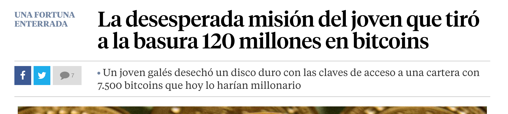

Las carteras de cryptomonedas, las direcciones y las llaves privadas
Imagínate por un momento ser esta persona: 
¡¿7,500 Bitcoins perdidos?! ¿Cómo pudo pasar? ¿Qué significa que estában los Bitcoins en este disco duro?
Vamos a asegurarnos de que esto (aunque quizás con cantidades menores de Crypto) no nos ocurra a nosotros. Para ello vamos a aprender qué son las carteras y qué tienen que ver con llaves privadas y direcciones.
¿Qué son las carteras, direcciones y llaves privadas?
Las carteras de cryptomonedas son el elemento básico para recibir, enviar e interactuar con activos digitales como cryptomonedas. Són el equivalente de una cartera física, donde llevamos el dinero y nuestros documentos, aunque en este caso son completamente digitales y estamos hablando de aplicaciones software para ordenador o móvil, o incluso hardware especializado.
Un ejemplo de cartera podría ser la aplicación Metamask:
Las carteras mantienen una lista de tus direcciones
Las direcciones son como el número de cuenta bancaria o tu dirección de correo electrónico. Son necesarias para recibir y enviar cryptomonedas.
Aquí podemos ver un ejemplo de dirección en formato QR y en formato escrito. Las direcciones de Ethereum empiezan por 0x mientras que las direcciones de Bitcoin empiezan por 1 o 3
Para poder interactuar con estas direcciones y poder acceder a las cryptomonedas necesitamos la llave privada.
La llave privada es el password de tu cuenta de correo o banca online. Hay que mantenerla a salvo ya que quien tiene acceso a la llave privada, tiene acceso a tus criptomonedas.
La llave privada es una serie de números y letras que se puede derivar de una serie de palabras (12 o 24) llamadas frase semilla, seed phrase o frase mnemotécnica.
La frase semilla es equivalente a la llave privada, ya que una puede ser extraída de la otra. Normalmente, cuando hagamos una copia de seguridad utilizaremos la frase semilla ya que es más difícil equivocarse al copiar palabras existentes que una serie de números y letras aleatorios
¿Qué le ocurrió al chico que perdió 7,500 Bitcoins?
Este chico utilizó una cartera en su ordenador que le creó automáticamente una pareja de su dirección de Bitcoins con su correspondiente llave privada.
Sin hacer ninguna copia de su llave privada (o de la frase semilla), tiró el ordenador a la basura, con la cartera que almacenaba su llave privada dentro de su disco duro.
Si hubiese hecho una copia de su llave privada, hubiese podido recuperar todos sus Bitcoins sin ningún problema, simplemente introduciendo esta llave privada en una nueva cartera en un nuevo ordenador.
Moraleja: ¡hay que hacer copias de seguridad de las llaves privadas!
Tipos de carteras
Podemos clasificar las carteras en 3 categorías diferentes:
- Según el soporte: para PC, móvil, hardware, papel
- Custodia: auto-custodia o custodiales
- Multi-crypto o específicas
Veamos algunos ejemplos para entender las diferencias:
{.center}
- Metamask es una cartera específica para Ethereum y otras tokens dentro de la red Ethereum, disponible como extensión de navegador para PC y aplicación móvil, que no tiene acceso a las llaves privadas del usuario (auto-custodia).
- Coinbase es una cartera multi-crypto, lo que significa que podemos tener activos digitales de diferentes Blockchains (Bitcoin y Ethereum en la misma cartera), disponible como página web y aplicación móvil que guarda las llaves privadas por el usuario (custodial)
Hay carteras que sirven para tener varios activos digitales en varias blockchains y otras carteras que son específicas de una blockchain en concreto.
Del mismo modo, hay carteras que permiten interactuar directamente con la blockchain y tener el control de tus cryptomonedas de manera soberana, y otras que "custodian" estos activos por tí; es decir, que igual que un banco, ellos guardan tu dinero en su cartera y te permiten retirarlo o hacer transacciones a través suyo.
La frase mnemonica és una serie de 12 palabras de las cuales se deriva la llave privada de nuestras criptomonedas. Si el password que hemos elegido al crear la identidad es el equivalente al PIN, esto es el equivalente al PUK - pero más importante! Si alguien se hace con estas 12 palabras (llamadas la "semilla" de la llave privada), podría tener acceso a nuestra cartera.
Del mismo modo, si perdemos estas 12 palabras y luego perdemos el móvil, no podremos recuperar nuestra identidad ni el acceso a la cartera, así que es muy importante guardarlo bien: yo recomendaría apuntarlo a papel y boli en un papel y ponerlo en un lugar seguro en casa.